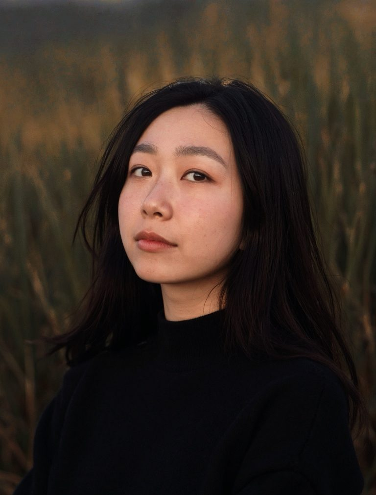

Not the other way round.

A classical pianist, an educator, and an arts coordinator. I've spent my whole life in this industry — on stage, backstage, and behind the desk.
From liaising with artists, venues and partners to running competitions and concerts: securing venues, arranging instrument hire and staging, building the schedules, and keeping the invoicing and records straight underneath it all.
I know what an artist needs, what their pain points are, and what falls apart in a programme — because I've been on that path myself.
Officially, I look after the admin, the logistics and the systems. Unofficially, I understand what this career actually asks of you — because I'm still living it too.
Master of Music, Distinction
Royal Welsh College of Music and Drama
As a minimalist, I believe less is more, so I approach systems and workflows the same way.
The best system isn't the one with the most features, or the one that looks most impressive in a demo. It's the one with every unnecessary step taken out, so it takes almost no effort to use. Tools are supposed to serve the people using them.
I'm not the sharpest technologist in the room. I'm the one who knows the arts industry inside out, and knows which tools actually help.
I take my cues from nature. Build an ecosystem properly — in work or in life — and it feeds itself: nothing needs forcing, and everything stays in balance.
Based in the UK, working remotely — and on site when the event needs it.
hello@shiyuzheng.com